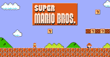
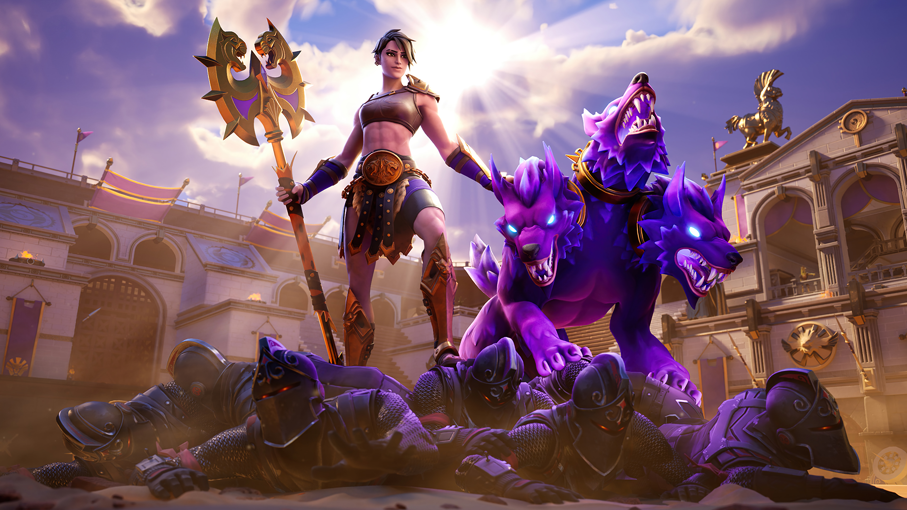

¿Cuál es el objetivo principal de los videojuegos?
Servir como un medio de entretenimiento: Los videojuegos son programas informáticos o software cuya principal función es constituir un medio de entretenimiento para el o los usuarios.
Super Mario Bros. fue lanzado originalmente el 13 de septiembre de 1985 en Japón para la videoconsola Nintendo Family Computer (Famicom). Posteriormente fue lanzado para el Nintendo Entertainment System (NES) en noviembre de 1985 en Norteamérica.

Fortnite es un videojuego del año 2017 desarrollado por la empresa Epic Games, lanzado como diferentes paquetes de software que presentan diferentes modos de juego, pero que comparten el mismo motor de juego y mecánicas. Fue anunciado en los Spike Video Game Awards en 2011

El primer título de Call of Duty fue desarrollado en cooperación entre Activision e Infinity Ward y llegó a los amantes de los videojuegos en octubre de 2003, con una versión exclusiva para ordenador.